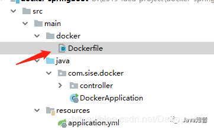
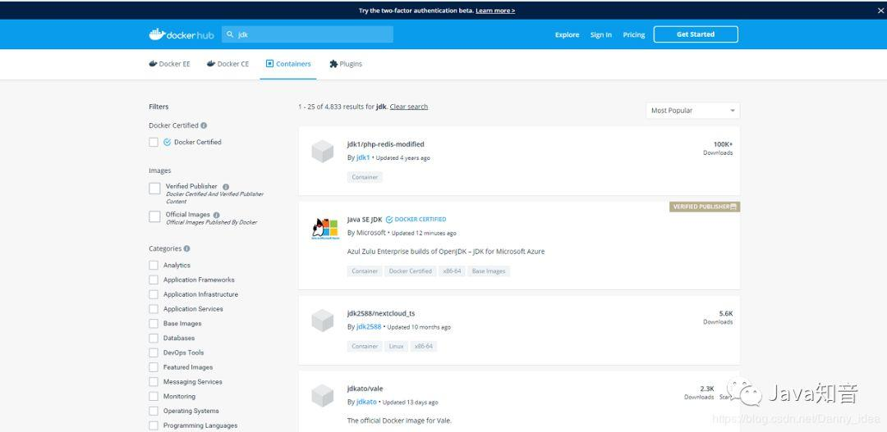
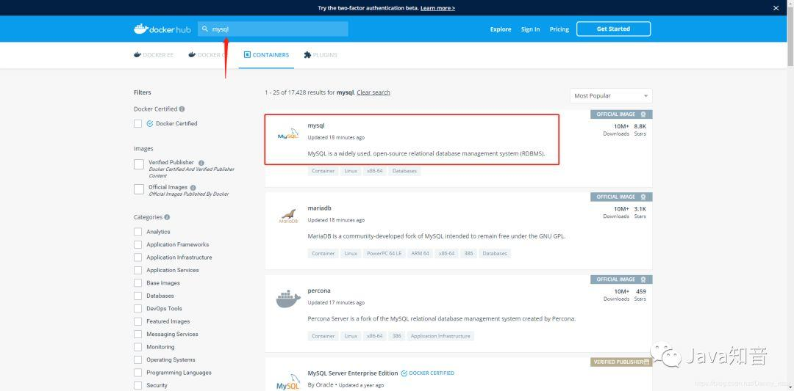
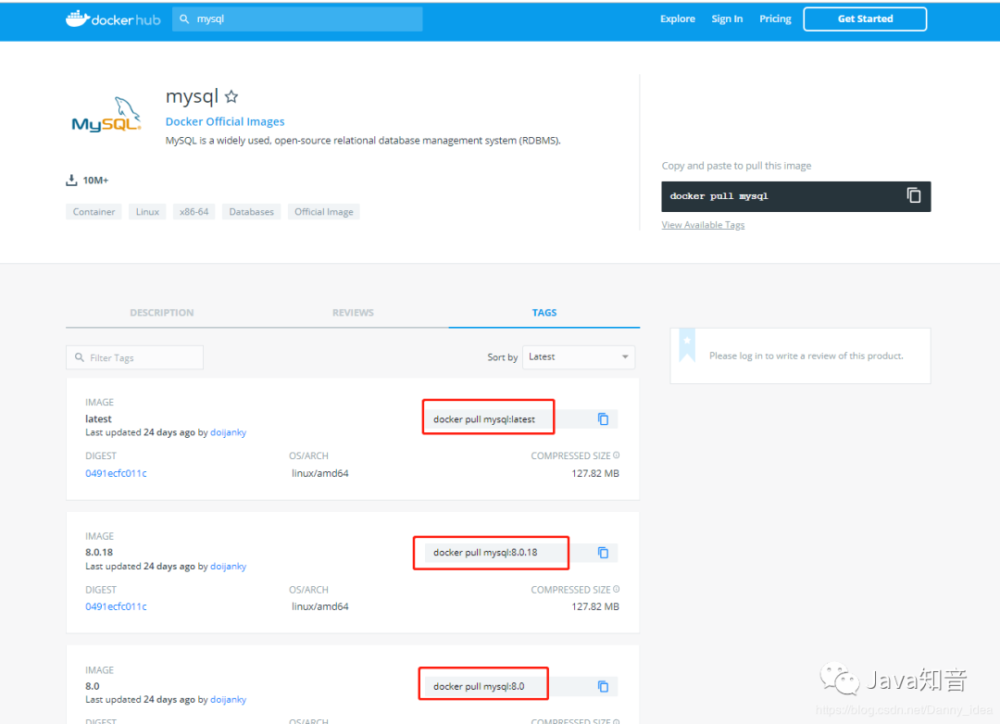

本篇为Docker从入门到掉坑第二篇：基于Docker构建SpringBoot微服务，没有看过上一篇的最好读过 Docker 从入门到掉坑 之后，阅读本篇。
在之前的文章里面介绍了如何基于docker容器部署一些常见的基础环境，例如MySQL、Redis这些，那么这篇文章里面我会介绍一些关于SpringBoot如何打包运行到docker容器中。
先介绍一下需要准备的基础环境内容：
docker运行在centos7上，要求系统为64位，Linux内核版本为3.10以上
docker运行在centos6.5或更高的版本上，要求系统为64位，系统内核版本为2.6.32-431或更高版本
关于如何查看当前系统的内核版本可以通过uname指令来查询：
[root@izwz9ic9ggky8kub9x1ptuz target]# uname -r
3.10.0-514.26.2.el7.x86_64
[root@izwz9ic9ggky8kub9x1ptuz target]#
首先我们来构建一个简单的springboot模板项目,下边这份是相关的依赖文件：
<?xml version="1.0" encoding="UTF-8"?>
<project xmlns="http://maven.apache.org/POM/4.0.0"
xmlns:xsi="http://www.w3.org/2001/XMLSchema-instance"
xsi:schemaLocation="http://maven.apache.org/POM/4.0.0 http://maven.apache.org/xsd/maven-4.0.0.xsd">
<modelVersion>4.0.0</modelVersion>
<groupId>com.sise</groupId>
<artifactId>docker-springboot</artifactId>
<version>1.0-SNAPSHOT</version>
<parent>
<groupId>org.springframework.boot</groupId>
<artifactId>spring-boot-starter-parent</artifactId>
<version>2.0.0.RELEASE</version>
</parent>
<properties>
<docker.image.prefix>springboot</docker.image.prefix>
</properties>
<dependencies>
<dependency>
<groupId>org.springframework.boot</groupId>
<artifactId>spring-boot-starter-web</artifactId>
</dependency>
<dependency>
<groupId>org.springframework.boot</groupId>
<artifactId>spring-boot-starter-test</artifactId>
<scope>test</scope>
</dependency>
</dependencies>
<build>
<!-- 注意这里的命名要与后边编写DockerFile中的命名一致 -->
<finalName>spring-boot-docker-1.0</finalName>
<plugins>
<plugin>
<groupId>org.springframework.boot</groupId>
<artifactId>spring-boot-maven-plugin</artifactId>
</plugin>
<!-- Docker maven plugin -->
<plugin>
<groupId>com.spotify</groupId>
<artifactId>docker-maven-plugin</artifactId>
<version>1.0.0</version>
<configuration>
<imageName>${docker.image.prefix}/${project.artifactId}</imageName>
<dockerDirectory>src/main/docker</dockerDirectory>
<resources>
<resource>
<targetPath>/</targetPath>
<directory>${project.build.directory}</directory>
<include>${project.build.finalName}.jar</include>
</resource>
</resources>
</configuration>
</plugin>
<!-- Docker maven plugin -->
</plugins>
</build>
</project>
注意，这里有几个配置点需要仔细注意一下，在上边的maven配置中有一条叫做dockerDirectory的属性配置：
<configuration>
<imageName>${docker.image.prefix}/${project.artifactId}</imageName>
<dockerDirectory>src/main/docker</dockerDirectory>
<resources>
<resource>
<targetPath>/</targetPath>
<directory>${project.build.directory}</directory>
<include>${project.build.finalName}.jar</include>
</resource>
</resources>
</configuration>
这条属性对应的是指Dockerfile文件所存放的位置：

注意有坑：
在src/main/docker的目录底下需要我们编写一份叫做Dockerfile的文件,注意这份Dockerfile文件的命名一定不能修改，否则会识别不出来，导致后边会抛出下边这种异常：
Failed to execute goal com.spotify:docker-maven-plugin:1.0.0:build (default-cli) on project docker-springboot:
Exception caught: Request error: POST unix://localhost:80/build?t=springboot%2Fdocker-springboot: 500, body:
{"message":"Cannot locate specified Dockerfile: Dockerfile"}: HTTP 500 Internal Server Error -> [Help 1]
这份Dockerfile文件需要用特殊的语法规则来进行编写，这里我给出一份基础的Dockerfile文件模板：
FROM openjdk:8-jdk-alpine
VOLUME /tmp
ADD spring-boot-docker-1.0.jar app.jar
ENTRYPOINT ["java","-Djava.security.egd=file:/dev/./urandom","-jar","/app.jar"]
稍微解释一下这里的语义含义：
FROM [image]指需要依赖的其他镜像信息，这里选择了jdk镜像
对于不熟悉的镜像环境如果需要搜索可以去到docker的官方网站进行查看：
https://hub.docker.com/
在这里插入图片描述
ADD 源地址目标地址 是指将原先的src文件 添加到我们需要打包的镜像里面
VOLUME /tmp Spring Boot应用程序为Tomcat创建的默认工作目录。作用是在你的主机”/var/lib/docker”目录下创建一个临时的文件，并且链接到容器中的”/tmp”目录。这部分的内容可以进入相应的目录下边去详细查看：
[root@izwz9ic9ggky8kub9x1ptuz docker]# cd /var/lib/docker
[root@izwz9ic9ggky8kub9x1ptuz docker]# ls
builder buildkit containers image network overlay2 plugins runtimes swarm tmp trust volumes
[root@izwz9ic9ggky8kub9x1ptuz docker]# cd ./tmp/
[root@izwz9ic9ggky8kub9x1ptuz tmp]# ls
docker-builder661781695
[root@izwz9ic9ggky8kub9x1ptuz tmp]# cd docker-builder661781695/
[root@izwz9ic9ggky8kub9x1ptuz docker-builder661781695]# ls
dockerFile docker-springboot-1.0-SNAPSHOT.jar
[root@izwz9ic9ggky8kub9x1ptuz docker-builder661781695]#
ENTRYPOINT 这条指令的含义是说执行应用的时候默认传输的命令内容。
SpringBoot的代码也比较简单，分别是Application启动类：
package com.sise.docker;
import org.springframework.boot.SpringApplication;
import org.springframework.boot.autoconfigure.SpringBootApplication;
/**
* @author idea
* @data 2019/11/10
*/
@SpringBootApplication
public class DockerApplication {
public static void main(String[] args) {
SpringApplication.run(DockerApplication.class);
}
}
以及相应的SpringBoot控制器:
package com.sise.docker.controller;
import org.springframework.web.bind.annotation.GetMapping;
import org.springframework.web.bind.annotation.RequestMapping;
import org.springframework.web.bind.annotation.RestController;
/**
* @author idea
* @data 2019/11/10
*/
@RestController
@RequestMapping(value = "/docker")
public class DockerController {
@GetMapping(value = "/test")
public String test(){
return "this is docker test";
}
}
application.yml文件信息：
server:
port: 7089
关于docker的环境安装，在上一篇文章中已经讲解到了，没看上一篇的，点这里：Docker 从入门到掉坑。
maven的环境安装讲解：
首先需要选择自己机器上边的安装地址，然后下载相应的文件包,并且进行解压：
wget http://mirrors.hust.edu.cn/apache/maven/maven-3/3.1.1/binaries/apache-maven-3.1.1-bin.tar.gz
tar zxf apache-maven-3.1.1-bin.tar.gz
然后我们进行相应的环境变量配置：
export MAVEN_HOME=[maven的安装路径]
export PATH=$PATH:$JAVA_HOME/bin:$MAVEN_HOME/bin
记得刷新一下profile配置文件
source /etc/profile
最后记得验证一下maven的配置是否正常：
[root@izwz9ic9ggky8kub9x1ptuz docker]# mvn -version
Apache Maven 3.1.1 (0728685237757ffbf44136acec0402957f723d9a; 2013-09-17 23:22:22+0800)
Maven home: /opt/maven/apache-maven-3.1.1
Java version: 1.8.0_151, vendor: Oracle Corporation
Java home: /opt/jdk/jdk1.8.0_151/jre
Default locale: en_US, platform encoding: UTF-8
OS name: "linux", version: "3.10.0-514.26.2.el7.x86_64", arch: "amd64", family: "unix"
一切就绪了，现在我们来将原先的准备好的一份SpringBoot项目上传到centos机器里面，然后通过maven的命令进行打包：
mvn package docker:build
当构建成功之后会有以下信息出现：
[INFO] Built springboot/spring-boot-docker
[INFO] ------------------------------------------------------------------------
[INFO] BUILD SUCCESS
[INFO] ------------------------------------------------------------------------
[INFO] Total time: 54.346 s
[INFO] Finished at: 2018-03-13T16:20:15+08:00
[INFO] Final Memory: 42M/182M
[INFO] ------------------------------------------------------------------------
接着我们便可以通过熟悉的docker images命令来查看当前的镜像内容了：
最后便是启动我们的镜像文件，并且进行测试：
[root@izwz9ic9ggky8kub9x1ptuz springboot-docker]# docker run -p 7089:7089 -d springboot/docker-springboot
38ec31c7a4802d852ee0834e1773136bd58a255875a9fa8cb2898aef0daa3e51
[root@izwz9ic9ggky8kub9x1ptuz springboot-docker]#
启动成功之后，我们通过命令进行测试接口：
[root@izwz9ic9ggky8kub9x1ptuz springboot-docker]# curl 127.0.0.1:7089/docker/test
this is docker test
[root@izwz9ic9ggky8kub9x1ptuz springboot-docker]#
好了，一个基本的基于docker容器运行的SpringBoot容器构建到这里就告一段落了。
在文末部分，我打算继上一篇文章中所提到的几个不足我在这里进行一些补充：
应 @古名 读者提到的问题，关于docker镜像的没有做官方的介绍：
当我们需要查询某些特殊镜像的时候有两种途径去搜索有关镜像的信息，一种是直接进入官网镜像搜索，还有一种是通过docker search 的方式搜索镜像。
第一种方式的具体操作为进入https://hub.docker.com 官网，然后在顶部的搜索栏进行相关的搜索。例如说我们要搜索关于mysql的镜像信息，那么就可以通过以下操作：

在官网上的搜索和在命令行执行docker search [镜像关键字]的结果基本是一致的：
[root@izwz9ic9ggky8kub9x1ptuz springboot-docker]# docker search mysql
NAME DESCRIPTION STARS OFFICIAL AUTOMATED
mysql MySQL is a widely used, open-source relation… 8787 [OK]
mariadb MariaDB is a community-developed fork of MyS… 3080 [OK]
mysql/mysql-server Optimized MySQL Server Docker images. Create… 652 [OK]
percona Percona Server is a fork of the MySQL relati… 459 [OK]
centos/mysql-57-centos7 MySQL 5.7 SQL database server 64
centurylink/mysql Image containing mysql. Optimized to be link… 61 [OK]
mysql/mysql-cluster Experimental MySQL Cluster Docker images. Cr… 56
deitch/mysql-backup REPLACED! Please use http://hub.docker.com/r… 41 [OK]
bitnami/mysql Bitnami MySQL Docker Image 35 [OK]
tutum/mysql Base docker image to run a MySQL database se… 34
schickling/mysql-backup-s3 Backup MySQL to S3 (supports periodic backup… 28 [OK]
prom/mysqld-exporter 23 [OK]
linuxserver/mysql A Mysql container, brought to you by LinuxSe… 22
centos/mysql-56-centos7 MySQL 5.6 SQL database server 17
circleci/mysql MySQL is a widely used, open-source relation… 16
mysql/mysql-router MySQL Router provides transparent routing be… 14
arey/mysql-client Run a MySQL client from a docker container 13 [OK]
imega/mysql-client Size: 36 MB, alpine:3.5, Mysql client: 10.1.… 9 [OK]
openshift/mysql-55-centos7 DEPRECATED: A Centos7 based MySQL v5.5 image… 6
fradelg/mysql-cron-backup MySQL/MariaDB database backup using cron tas… 4 [OK]
genschsa/mysql-employees MySQL Employee Sample Database 2 [OK]
ansibleplaybookbundle/mysql-apb An APB which deploys RHSCL MySQL 2 [OK]
jelastic/mysql An image of the MySQL database server mainta… 1
widdpim/mysql-client Dockerized MySQL Client (5.7) including Curl… 0 [OK]
monasca/mysql-init A minimal decoupled init container for mysql 0
这里你可能会疑惑，为何输入了MySQL关键字之后却出来了这么多的相关信息，实际上这里走的是一次全文搜索，会将一些在描述内容中包含有MySQL的镜像信息都统一查询出来。
假设我们需要选择mysql的某一份镜像进行下载的话，可以直接docker pull mysql,但是这种方式会拉去最新版本的镜像到宿主机中。如果对版本有要求，我们可以到官网上选择合适的版本进行指定拉去。

图中我也圈起来了拉去不同版本镜像的命令。
应 @别慌张 读者问到的docker可视化管理工具的问题。
实际上docker的可视化管理工具有很多：shipyard，DockerUI，Portainer，Rancher等等
我建议是，如果是作为初学者，还是建议使用命令行会好些，可视化工具实际上是会弱化开发人员的动手能力。使用可视化工具的主要目的还是为了提升工作效率和降低实操难度而设计的。